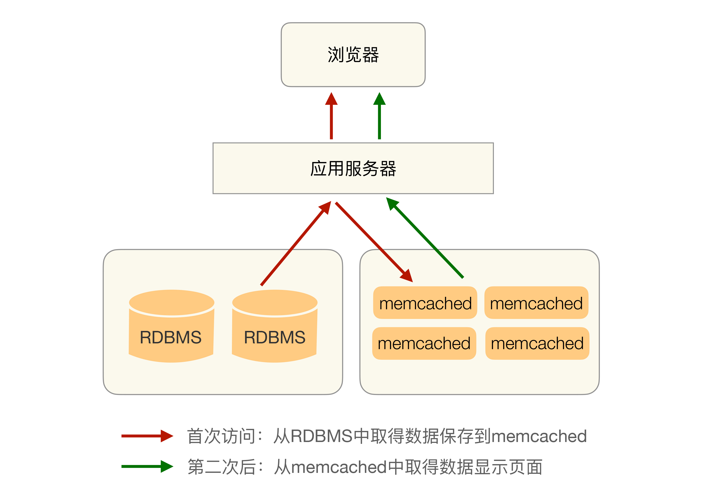

- 00 开篇词 照着做，你也能成为架构师！.md.html
- 01 架构到底是指什么？.md.html
- 02 架构设计的历史背景.md.html
- 03 架构设计的目的.md.html
- 04 复杂度来源：高性能.md.html
- 05 复杂度来源：高可用.md.html
- 06 复杂度来源：可扩展性.md.html
- 07 复杂度来源：低成本、安全、规模.md.html
- 08 架构设计三原则.md.html
- 09 架构设计原则案例.md.html
- 10 架构设计流程：识别复杂度.md.html
- 11 架构设计流程：设计备选方案.md.html
- 12 架构设计流程：评估和选择备选方案.md.html
- 13 架构设计流程：详细方案设计.md.html
- 14 高性能数据库集群：读写分离.md.html
- 15 高性能数据库集群：分库分表.md.html
- 16 高性能NoSQL.md.html
- 17 高性能缓存架构.md.html
- 18 单服务器高性能模式：PPC与TPC.md.html
- 19 单服务器高性能模式：Reactor与Proactor.md.html
- 20 高性能负载均衡：分类及架构.md.html
- 21 高性能负载均衡：算法.md.html
- 22 想成为架构师，你必须知道CAP理论.md.html
- 23 想成为架构师，你必须掌握的CAP细节.md.html
- 24 FMEA方法，排除架构可用性隐患的利器.md.html
- 25 高可用存储架构：双机架构.md.html
- 26 高可用存储架构：集群和分区.md.html
- 27 如何设计计算高可用架构？.md.html
- 28 业务高可用的保障：异地多活架构.md.html
- 29 异地多活设计4大技巧.md.html
- 30 异地多活设计4步走.md.html
- 31 如何应对接口级的故障？.md.html
- 32 可扩展架构的基本思想和模式.md.html
- 33 传统的可扩展架构模式：分层架构和SOA.md.html
- 34 深入理解微服务架构：银弹 or 焦油坑？.md.html
- 35 微服务架构最佳实践 - 方法篇.md.html
- 36 微服务架构最佳实践 - 基础设施篇.md.html
- 37 微内核架构详解.md.html
- 38 架构师应该如何判断技术演进的方向？.md.html
- 39 互联网技术演进的模式.md.html
- 40 互联网架构模板：存储层技术.md.html
- 41 互联网架构模板：开发层和服务层技术.md.html
- 42 互联网架构模板：网络层技术.md.html
- 43 互联网架构模板：用户层和业务层技术.md.html
- 44 互联网架构模板：平台技术.md.html
- 45 架构重构内功心法第一式：有的放矢.md.html
- 46 架构重构内功心法第二式：合纵连横.md.html
- 47 架构重构内功心法第三式：运筹帷幄.md.html
- 48 再谈开源项目：如何选择、使用以及二次开发？.md.html
- 49 谈谈App架构的演进.md.html
- 50 架构实战：架构设计文档模板.md.html
- 51 如何画出优秀的软件系统架构图？.md.html
- 加餐｜业务架构实战营开营了.md.html
- 加餐｜单服务器高性能模式性能对比.md.html
- 加餐｜扒一扒中台皇帝的外衣.md.html
- 如何高效地学习开源项目 华仔，放学别走！ 第3期.md.html
- 新书首发 《从零开始学架构》.md.html
- 架构专栏特别放送 华仔，放学别走！ 第2期.md.html
- 架构专栏特别放送 华仔，放学别走！第1期.md.html
- 架构师必读书单 华仔，放学别走！ 第5期.md.html
- 架构师成长之路 华仔，放学别走！ 第4期.md.html
- 结束语 坚持，成就你的技术梦想.md.html
- 捐赠
17 高性能缓存架构
虽然我们可以通过各种手段来提升存储系统的性能，但在某些复杂的业务场景下，单纯依靠存储系统的性能提升不够的，典型的场景有：
- 需要经过复杂运算后得出的数据，存储系统无能为力
例如，一个论坛需要在首页展示当前有多少用户同时在线，如果使用MySQL来存储当前用户状态，则每次获取这个总数都要“count(*)”大量数据，这样的操作无论怎么优化MySQL，性能都不会太高。如果要实时展示用户同时在线数，则MySQL性能无法支撑。
- 读多写少的数据，存储系统有心无力
绝大部分在线业务都是读多写少。例如，微博、淘宝、微信这类互联网业务，读业务占了整体业务量的90%以上。以微博为例：一个明星发一条微博，可能几千万人来浏览。如果使用MySQL来存储微博，用户写微博只有一条insert语句，但每个用户浏览时都要select一次，即使有索引，几千万条select语句对MySQL数据库的压力也会非常大。
缓存就是为了弥补存储系统在这些复杂业务场景下的不足，其基本原理是将可能重复使用的数据放到内存中，一次生成、多次使用，避免每次使用都去访问存储系统。
缓存能够带来性能的大幅提升，以Memcache为例，单台Memcache服务器简单的key-value查询能够达到TPS 50000以上，其基本的架构是：

缓存虽然能够大大减轻存储系统的压力，但同时也给架构引入了更多复杂性。架构设计时如果没有针对缓存的复杂性进行处理，某些场景下甚至会导致整个系统崩溃。今天，我来逐一分析缓存的架构设计要点。
缓存穿透
缓存穿透是指缓存没有发挥作用，业务系统虽然去缓存查询数据，但缓存中没有数据，业务系统需要再次去存储系统查询数据。通常情况下有两种情况：
1.存储数据不存在
第一种情况是被访问的数据确实不存在。一般情况下，如果存储系统中没有某个数据，则不会在缓存中存储相应的数据，这样就导致用户查询的时候，在缓存中找不到对应的数据，每次都要去存储系统中再查询一遍，然后返回数据不存在。缓存在这个场景中并没有起到分担存储系统访问压力的作用。
通常情况下，业务上读取不存在的数据的请求量并不会太大，但如果出现一些异常情况，例如被黑客攻击，故意大量访问某些读取不存在数据的业务，有可能会将存储系统拖垮。
这种情况的解决办法比较简单，如果查询存储系统的数据没有找到，则直接设置一个默认值（可以是空值，也可以是具体的值）存到缓存中，这样第二次读取缓存时就会获取到默认值，而不会继续访问存储系统。
2.缓存数据生成耗费大量时间或者资源
第二种情况是存储系统中存在数据，但生成缓存数据需要耗费较长时间或者耗费大量资源。如果刚好在业务访问的时候缓存失效了，那么也会出现缓存没有发挥作用，访问压力全部集中在存储系统上的情况。
典型的就是电商的商品分页，假设我们在某个电商平台上选择“手机”这个类别查看，由于数据巨大，不能把所有数据都缓存起来，只能按照分页来进行缓存，由于难以预测用户到底会访问哪些分页，因此业务上最简单的就是每次点击分页的时候按分页计算和生成缓存。通常情况下这样实现是基本满足要求的，但是如果被竞争对手用爬虫来遍历的时候，系统性能就可能出现问题。
具体的场景有：
- 分页缓存的有效期设置为1天，因为设置太长时间的话，缓存不能反应真实的数据。
- 通常情况下，用户不会从第1页到最后1页全部看完，一般用户访问集中在前10页，因此第10页以后的缓存过期失效的可能性很大。
- 竞争对手每周来爬取数据，爬虫会将所有分类的所有数据全部遍历，从第1页到最后1页全部都会读取，此时很多分页缓存可能都失效了。
- 由于很多分页都没有缓存数据，从数据库中生成缓存数据又非常耗费性能（order by limit操作），因此爬虫会将整个数据库全部拖慢。
这种情况并没有太好的解决方案，因为爬虫会遍历所有的数据，而且什么时候来爬取也是不确定的，可能是每天都来，也可能是每周，也可能是一个月来一次，我们也不可能为了应对爬虫而将所有数据永久缓存。通常的应对方案要么就是识别爬虫然后禁止访问，但这可能会影响SEO和推广；要么就是做好监控，发现问题后及时处理，因为爬虫不是攻击，不会进行暴力破坏，对系统的影响是逐步的，监控发现问题后有时间进行处理。
缓存雪崩
缓存雪崩是指当缓存失效（过期）后引起系统性能急剧下降的情况。当缓存过期被清除后，业务系统需要重新生成缓存，因此需要再次访问存储系统，再次进行运算，这个处理步骤耗时几十毫秒甚至上百毫秒。而对于一个高并发的业务系统来说，几百毫秒内可能会接到几百上千个请求。由于旧的缓存已经被清除，新的缓存还未生成，并且处理这些请求的线程都不知道另外有一个线程正在生成缓存，因此所有的请求都会去重新生成缓存，都会去访问存储系统，从而对存储系统造成巨大的性能压力。这些压力又会拖慢整个系统，严重的会造成数据库宕机，从而形成一系列连锁反应，造成整个系统崩溃。
缓存雪崩的常见解决方法有两种：更新锁机制和后台更新机制。
1.更新锁
对缓存更新操作进行加锁保护，保证只有一个线程能够进行缓存更新，未能获取更新锁的线程要么等待锁释放后重新读取缓存，要么就返回空值或者默认值。
对于采用分布式集群的业务系统，由于存在几十上百台服务器，即使单台服务器只有一个线程更新缓存，但几十上百台服务器一起算下来也会有几十上百个线程同时来更新缓存，同样存在雪崩的问题。因此分布式集群的业务系统要实现更新锁机制，需要用到分布式锁，如ZooKeeper。
2.后台更新
由后台线程来更新缓存，而不是由业务线程来更新缓存，缓存本身的有效期设置为永久，后台线程定时更新缓存。
后台定时机制需要考虑一种特殊的场景，当缓存系统内存不够时，会“踢掉”一些缓存数据，从缓存被“踢掉”到下一次定时更新缓存的这段时间内，业务线程读取缓存返回空值，而业务线程本身又不会去更新缓存，因此业务上看到的现象就是数据丢了。解决的方式有两种：
- 后台线程除了定时更新缓存，还要频繁地去读取缓存（例如，1秒或者100毫秒读取一次），如果发现缓存被“踢了”就立刻更新缓存，这种方式实现简单，但读取时间间隔不能设置太长，因为如果缓存被踢了，缓存读取间隔时间又太长，这段时间内业务访问都拿不到真正的数据而是一个空的缓存值，用户体验一般。
- 业务线程发现缓存失效后，通过消息队列发送一条消息通知后台线程更新缓存。可能会出现多个业务线程都发送了缓存更新消息，但其实对后台线程没有影响，后台线程收到消息后更新缓存前可以判断缓存是否存在，存在就不执行更新操作。这种方式实现依赖消息队列，复杂度会高一些，但缓存更新更及时，用户体验更好。
后台更新既适应单机多线程的场景，也适合分布式集群的场景，相比更新锁机制要简单一些。
后台更新机制还适合业务刚上线的时候进行缓存预热。缓存预热指系统上线后，将相关的缓存数据直接加载到缓存系统，而不是等待用户访问才来触发缓存加载。
缓存热点
虽然缓存系统本身的性能比较高，但对于一些特别热点的数据，如果大部分甚至所有的业务请求都命中同一份缓存数据，则这份数据所在的缓存服务器的压力也很大。例如，某明星微博发布“我们”来宣告恋爱了，短时间内上千万的用户都会来围观。
缓存热点的解决方案就是复制多份缓存副本，将请求分散到多个缓存服务器上，减轻缓存热点导致的单台缓存服务器压力。以微博为例，对于粉丝数超过100万的明星，每条微博都可以生成100份缓存，缓存的数据是一样的，通过在缓存的key里面加上编号进行区分，每次读缓存时都随机读取其中某份缓存。
缓存副本设计有一个细节需要注意，就是不同的缓存副本不要设置统一的过期时间，否则就会出现所有缓存副本同时生成同时失效的情况，从而引发缓存雪崩效应。正确的做法是设定一个过期时间范围，不同的缓存副本的过期时间是指定范围内的随机值。
实现方式
由于缓存的各种访问策略和存储的访问策略是相关的，因此上面的各种缓存设计方案通常情况下都是集成在存储访问方案中，可以采用“程序代码实现”的中间层方式，也可以采用独立的中间件来实现。
小结
今天我为你讲了高性能架构设计中缓存设计需要注意的几个关键点，这些关键点本身在技术上都不复杂，但可能对业务产生很大的影响，轻则系统响应变慢，重则全站宕机，架构师在设计架构的时候要特别注意这些细节，希望这些设计关键点和技术方案对你有所帮助。
这就是今天的全部内容，留一道思考题给你吧，分享一下你所在的业务发生过哪些因为缓存导致的线上问题？采取了什么样的解决方案？效果如何？
© 2019 - 2023 Liangliang Lee. Powered by gin and hexo-theme-book.